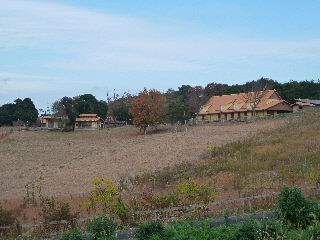
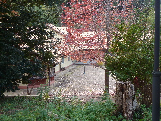
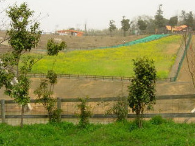

いりすの丘でシクラメンまつりがありました。
2014/11/24

眺めがいいですね。秋らしくていい雰囲気です。
今日はシクラメンまつりで入場できたんですが、普段はどうなっているんでしょうね？

シクラメン会場はお客さんが多く賑わっていました。
綺麗なシクラメンを沢山見ていたら、ちょっと育ててみたくなりました。
でも、どうやって育てるか知らないので今日は買えませんでした。
育て方を勉強して、育てれそうだったら購入しようと思います。
島根県出雲市斐川町大字学頭3646-1
2014/11/24

眺めがいいですね。秋らしくていい雰囲気です。
今日はシクラメンまつりで入場できたんですが、普段はどうなっているんでしょうね？

シクラメン会場はお客さんが多く賑わっていました。
綺麗なシクラメンを沢山見ていたら、ちょっと育ててみたくなりました。
でも、どうやって育てるか知らないので今日は買えませんでした。
育て方を勉強して、育てれそうだったら購入しようと思います。
2007/11/23
シクラメン祭りといっても、お祭りってわけではなくシクラメンの即売会だったりします。
でもシクラメン祭りの最中はいりすの丘は入場無料になるので、見物客が多く会場は人でいっぱいでした。にぎやかでいいですね。
いりすの丘は運営があまりうまくいってないため、園内のバスや遊具が廃止になったって話は聞いていたんですが、行って見ると羊や馬等がいたエリアが立ち入り禁止になってました。
なので今日見れた動物は兎と豚だけでした。寂しくなりましたね。
イベント中だけ立ち入り禁止なのかは分からないですが、遊び場もない、動物もあんまりいないんだったら入場料が無料になっても人が行かないんじゃないかって余計な心配しちゃいました。でもそれが一番BESTなんでしょうね。きっと。
メインのシクラメンですが、あまり広くない室内会場なのでちょっと動きづらかったですし、見づらかったです。でもその分より多くのシクラメンが置いてあるって事ですね。
2006/04/08
今日イリスの丘では、6周年記念って事で入場無料だったので行って来ました。
もうっていうか、まだ6年なんですね。もっと古くからある気分でした。
前に来た時は営業していた所が、今回はやってなかったりして「寂しくなったなー、これってリストラ？」って感じがしました。
私も無料の日しか行けないので、何も言えないですけど、頑張って欲しいですね。
ソーセージを買って食べたんですが、荒挽きで食感もいいし、ちょっと濃い味なんですけど嫌味とかなくてシンプルな味でおいしかったです。
春ってことで、菜の花が見ごろなんですが、実際はこんな感じでした。
